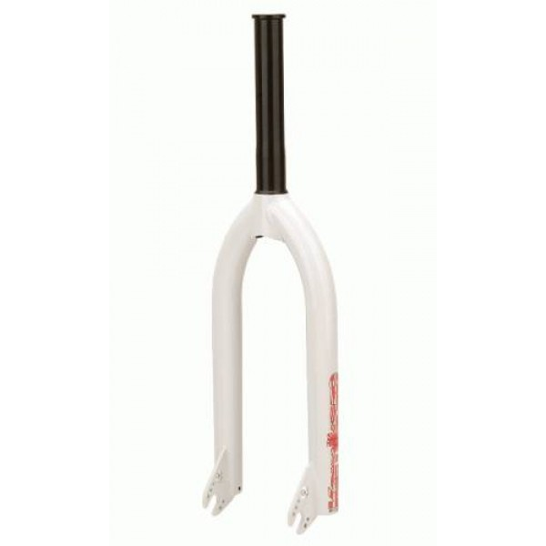
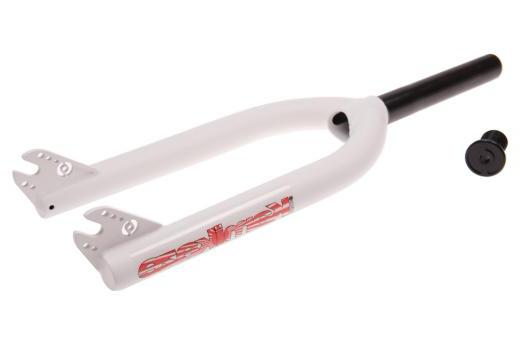

Вилка BMX
Зроблена з легкого й міцного сплаву хромомолібденової сталі, дуже легка й міцна вилка PRIMO Kamikaze 2.

1765грн.
Характеристики і опис:
Виробник - PRIMO
Діаметр колеса - 20"
Призначення - BMX
Вага - 895 г
Тип амортизації - Жорстка
Вибіг - 14мм
Тип ніг - конічні
Тип рульової колонки - інтегрована
Шток - суцільний